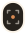

Impostômetro Rolante
Mostra a receita acumulada de Rolante.
impostometro.rolanters.com.br
Gastômetro Rolante
Mostra para onde vão os gastos públicos de Rolante.
gastometro.rolanters.com.br
Licitações Rolante
Mostra o que a Prefeitura está licitando e quem venceu.
licitacoes.rolanters.com.br
Emendas Rolante
Mostra quem enviou emendas para Rolante e o que foi feito com o dinheiro.
emendas.rolanters.com.br

Câmeras Rolante
Câmeras dos rios de Rolante para acompanhar as cheias.
cameras.rolanters.com.br